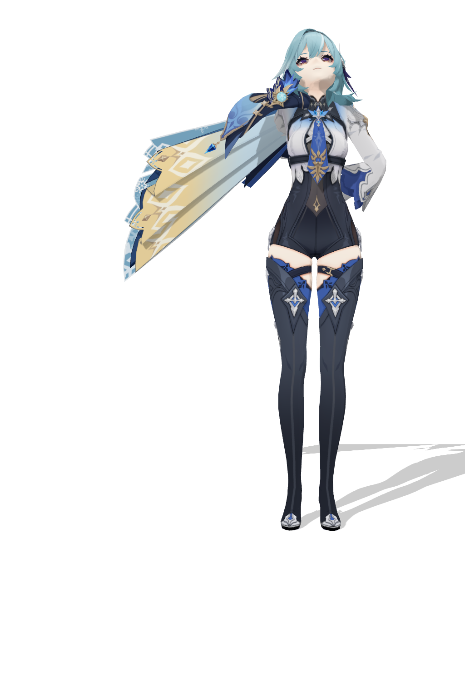
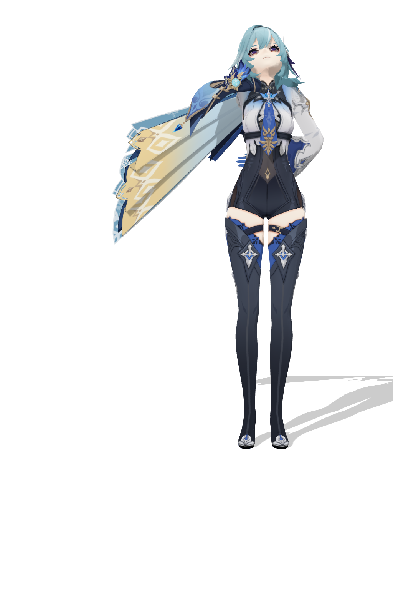
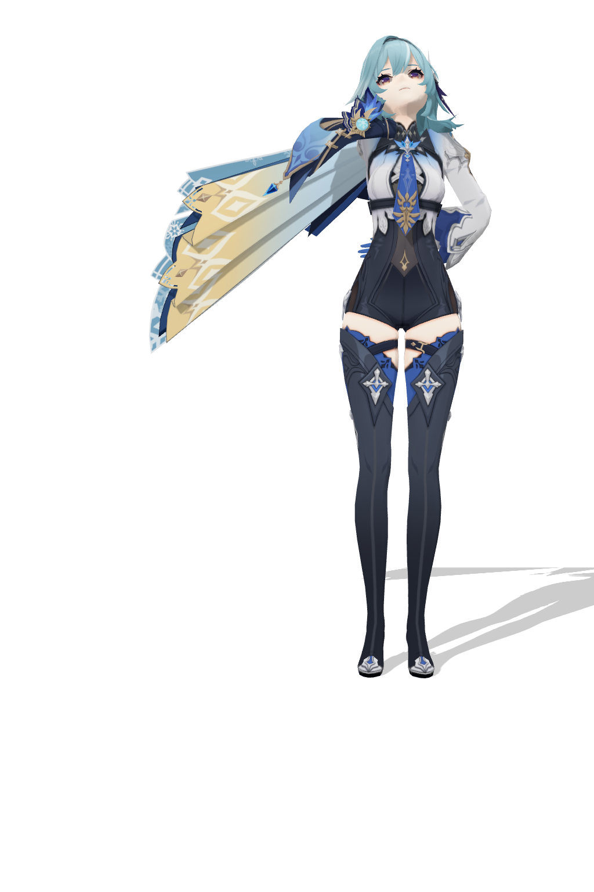

created2026-06-17T11:16:02.145ZmodelMMD/优菈_by_原神_339146e6e418d79e85a515b26414c0b0/优菈.pmxvmdimgToAction/outputs/actions/thinking_chin_edge/fit_loop_offsets/iter04/vmd/x012_y010_z0095.vmdright hand gatefail

f180right wrist to chin: 31.1pxleft wrist to waist: 144.0px

f240right wrist to chin: 11.0pxleft wrist to waist: 152.8px

f292right wrist to chin: 11.4pxleft wrist to waist: 144.9px